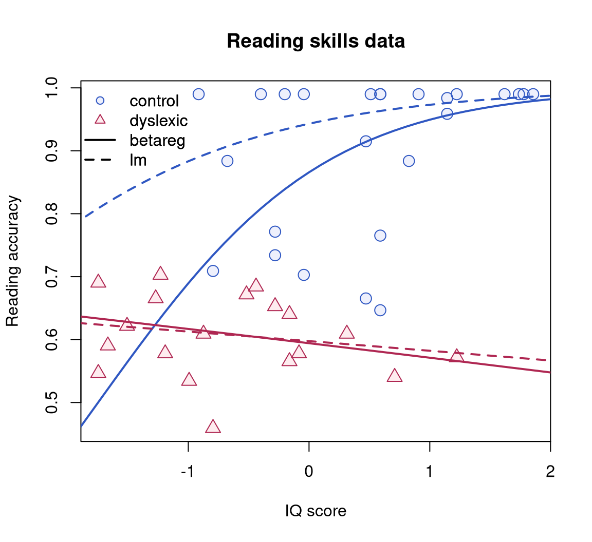
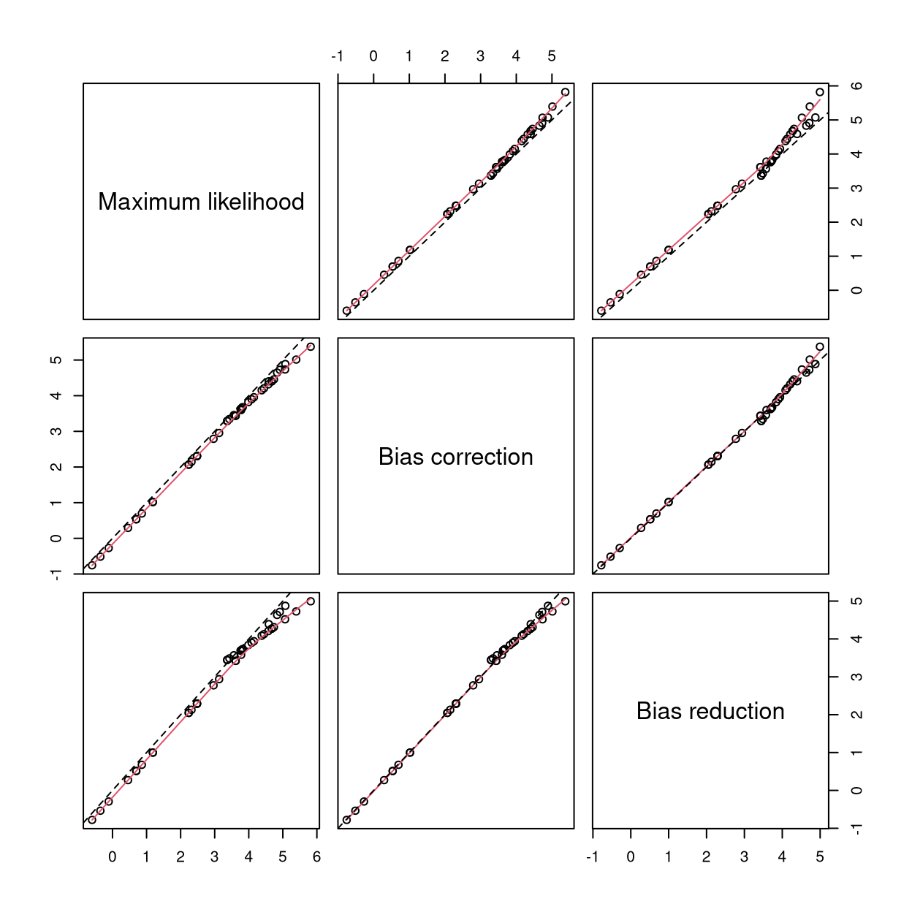
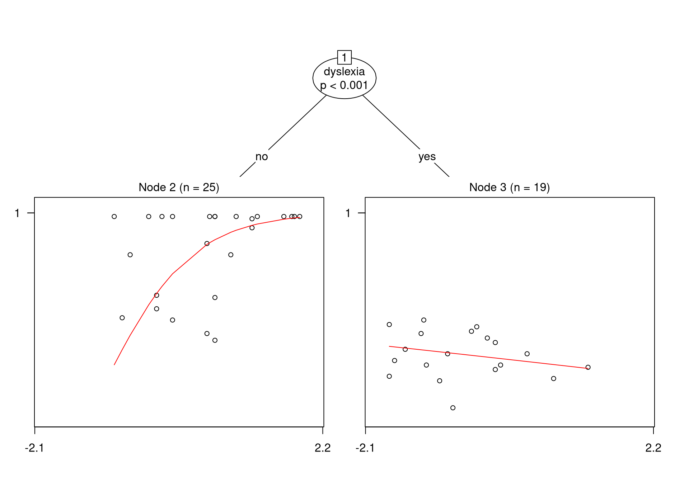
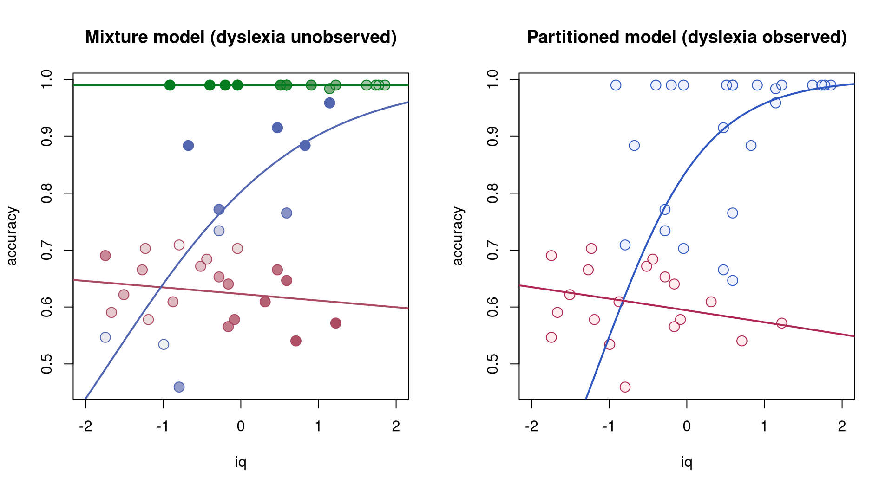

betareg(formula, data, subset, na.action, weights, offset,
link = "logit", link.phi = NULL, type = c("ML", "BC", "BR"),
control = betareg.control(...), model = TRUE, y = TRUE, x = FALSE, ...)Extended Beta Regression in R: Shaken, Stirred, Mixed, and Partitioned
Abstract
This introduction to the extended features of the R package betareg is a (slightly) modified version of Grün, Kosmidis, and Zeileis (2012), published in the Journal of Statistical Software.
Beta regression – an increasingly popular approach for modeling rates and proportions – is extended in various directions: (a) bias correction/reduction of the maximum likelihood estimator, (b) beta regression tree models by means of recursive partitioning, (c) latent class beta regression by means of finite mixture models. All three extensions may be of importance for enhancing the beta regression toolbox in practice to provide more reliable inference and capture both observed and unobserved/latent heterogeneity in the data. Using the analogy of Smithson and Verkuilen (2006), these extensions make beta regression not only “a better lemon squeezer” (compared to classical least squares regression) but a full-fledged modern juicer offering lemon-based drinks: shaken and stirred (bias correction and reduction), mixed (finite mixture model), or partitioned (tree model). All three extensions are provided in the R package betareg (at least 2.4-0), building on generic algorithms and implementations for bias correction/reduction, model-based recursive partioning, and finite mixture models, respectively. Specifically, the new functions betatree() and betamix() reuse the object-oriented flexible implementation from the R packages partykit and flexmix, respectively.
1 Introduction
1.1 A brief review of beta regression
Beta regression is a model for continuous response variables \(y\) which assume values in the open unit interval \((0, 1)\). Such response variables may stem from rates, proportions, concentrations, etc. A regression model where the mean as well as the precision is modeled through covariates was introduced by Ferrari and Cribari-Neto (2004) along with the extensions by Smithson and Verkuilen (2006) and Simas, Barreto-Souza, and Rocha (2010). This model is also referred to as “double index regression model” because it contains two regression parts: one for the mean and one for the precision. Ferrari and Cribari-Neto (2004) employed an alternative parameterization of the beta distribution characterizing more easily the mean and the variance. In this parameterization the beta distribution has the density
\[ f(y;\mu,\phi) = \frac{\Gamma(\phi)}{\Gamma(\mu\phi)\Gamma((1-\mu)\phi)}y^{\mu\phi-1}(1-y)^{(1-\mu)\phi-1}\, \tag{1}\]
where \(0<y<1\), \(0<\mu<1\), \(\phi > 0\), and \(\Gamma(\cdot)\) is the gamma function. A beta-distributed variable \(Y\) then has mean \(\text{E}(Y) = \mu\) and variance \(\text{Var}(Y) = \mu(1-\mu)/(1+\phi)\) so that \(\phi\) can be seen as a precision parameter.
The double index beta regression model is specified in the following way. Given observations on \(n\) independent beta-distributed random variables \(Y_i\) (\(i = 1, \dots, n\)), the corresponding parameters \(\mu_i\) and \(\phi_i\) are linked to linear predictors \(\eta_i\) and \(\zeta_i\) as follows
\[ \begin{align} g_1(\mu_i) & = \eta_i = x_i^\top \beta \, , \\ g_2(\phi_i) & = \zeta_i = z_i^\top \gamma\, , \end{align} \tag{2}\]
where \(x_i\) and \(z_i\) are \(p\)- and \(q\)-dimensional vectors of covariates observed along with \(Y_i\) \((i = 1, \ldots, n)\), and \(\beta = (\beta_1, \ldots, \beta_p)^\top\), \(\gamma = (\gamma_1, \ldots, \gamma_q)^\top\) are the vectors of coefficients associated with the means and the precisions, respectively. The functions \(g_1(\cdot)\) and \(g_2(\cdot)\) are monotonic link functions, preferably with the property of mapping the range of \(\mu_i\) \((0, 1)\) and \(\phi_i\) \((0, \infty)\), respectively, to the real line. Suitable candidates for \(g_1(\cdot)\) are the logit, probit and generally any inverse of a cumulative distribution function, and for \(g_2(\cdot)\) the log function. Another common choice for \(g_2(\cdot)\) is the identity function which, however, can lead to invalid results when some \(\zeta_i < 0\).
Typically, the coefficients \(\beta\) and \(\gamma\) are estimated by maximum likelihood (ML) and inference is based on the usual central limit theorem with its associated asymptotic tests, e.g., likelihood ratio, Wald, score/Lagrange multiplier (LM).
1.2 Implementation in R
The R package betareg (Cribari-Neto and Zeileis 2010) provides ML estimation of beta regressions in its main model fitting function betareg(). The interface as well as the fitted model objects are designed to be similar to those from glm(). The model specification is via a formula plus data. Because two types of covariates need to be distinguished a two-part formula is allowed based on functionality provided by the Formula package (Zeileis and Croissant 2010). For example, would assign the covariates x1, x2, and x3 to the mean submodel and z1 and z2 to the precision submodel in Equation 2. Function betareg() internally uses function optim() as a general purpose optimizer to maximize the log-likelihood. The fitted model has methods for several extractor functions, e.g., coef(), vcov(), residuals(), logLik(). Base methods for the returned fitted model are summary(), AIC(), confint(). Further methods are available for functions from lmtest (Zeileis and Hothorn 2002) and car (Fox and Weisberg 2019), e.g., lrtest(), waldtest(), coeftest(), and linearHypothesis(). Multiple testing is possible via package multcomp (Hothorn, Bretz, and Westfall 2008) and structural change tests can be performed using package strucchange (Zeileis et al. 2002).
1.3 Extensions
Although the betareg package as published by Cribari-Neto and Zeileis (2010) provides a rather complete beta regression toolbox based on classical ML inference, further techniques may be required in practice. First, it has been shown that ML inference may be severely biased in the context of beta regression (Kosmidis and Firth 2010), possibly leading to overly optimistic inferences in the sense of underestimating the standard errors of the estimators. Second, it is not always easy to capture all heterogeneity in the data through the two linear predictors, especially when there are latent unobserved groups/clusters of observations.
To address the first issue of potentially biased inference, the results of Kosmidis and Firth (2010) are extended to the case with mean and precision covariates and the corresponding methods are implemented in the betareg() function starting from version 2.4-0 of betareg. The software optionally allows for bias-corrected or bias-reduced estimation by adopting the unifying iteration developed in Kosmidis and Firth (2010).
To address the second issue of heterogeneity between groups/clusters of observations, two generic strategies, model-based recursive partitioning (Zeileis, Hothorn, and Hornik 2008) and finite mixture models , are applied to beta regressions. The idea for both techniques is to capture situations in which the regression relationships vary across groups in the population. If one can identify variables which are related to such groups, one may be able to include them directly in the regression relationships. However, (a) this may lead to rather complex and hard to interpret models, and (b) unnecessary complexity is introduced if the differences are only present in a subset of the combined groups induced by several variables. Model-based recursive partitioning avoids such drawbacks. Furthermore, if groups cannot be directly related to observed variables, the heterogeneity can be accounted for by using finite mixture models. Therefore, extensions of the betareg package are introduced where model heterogeneity is taken into account when covariates that characterize the groups are available, and when the heterogeneity is due to latent variables. The new function betatree() provides model-based recursive partitioning of beta regressions leveraging tools from the partykit package (Hothorn and Zeileis 2015), and the function betamix() provides beta regression mixture models (or latent class beta regression) reusing the generic functionality from the flexmix package (Leisch and Grün 2023).
2 Bias correction and reduction in beta regressions
2.1 Preamble
Kosmidis and Firth (2010) show that bias correction (BC) or bias reduction (BR) of the ML estimator in parametric models may be achieved via a unifying quasi Fisher scoring algorithm. They illustrate the applicability of their algorithm in a beta regression setting with a common precision parameter \(\phi\) for all subjects, also revealing some errors in previous literature for the reduction of bias in beta regression models – specifically mistakes in Ospina, Cribari-Neto, and Vasconcellos (2006) and Simas, Barreto-Souza, and Rocha (2010) — that led to misleading negative conclusions about the effect of BC/BR on inferences for beta regression models. In Kosmidis and Firth (2010), it is shown that BC/BR for beta regression models can be desirable because the ML estimator of \(\phi\) may demonstrate substantial upward bias, which in turn may lead to underestimation of asymptotic standard errors and hence over-optimistic Wald-type inferences (e.g., confidence intervals with coverage far below the nominal levels).
The results in Kosmidis and Firth (2010) are extended here to cover not only the case of constant \(\phi\) but also a regression part for the precision parameters as shown in Equation 2.
2.2 Generic framework
Denote by \(0_{k}\) a vector of \(k\) zeros and by \(S(\theta)\) the vector of the log-likelihood derivatives for a parametric model with parameter \(\theta\). Firth (1993) showed that the solution \(\tilde\theta\) of the equation
\[ S(\tilde{\theta}) + A(\tilde{\theta}) = 0_{p+q} \, , \tag{3}\]
has smaller asymptotic bias than the ML estimator, if the \(t\)-th component of the vector \(A(\theta)\) has the form
\[ A_t(\theta) = \frac{1}{2}\text{trace}\left[\{F(\theta)\}^{-1} \left\{ P_t(\theta) + Q_t(\theta) \right\}\right] \quad (t = 1, \ldots, p + q) \, , \]
with \(F(\theta)\) the expected information matrix and
\[ \begin{align} P_t(\theta) & = \text{E}\{S(\theta)S^\top(\theta)S_t(\theta)\} \quad (t = 1, \ldots, p + q)\, , \\ Q_t(\theta) & = -\text{E}\left\{I(\theta)S_t(\theta) \right\} \quad (t = 1, \ldots, p + q)\, , \end{align} \tag{4}\]
where \(S_t(\theta)\) denotes the \(t\)-th component of \(S(\theta)\) \((t = 1, \ldots, p + q)\) and \(I(\theta)\) is the observed information matrix (minus the matrix of second derivatives of the log-likelihood with respect to \(\theta\)).
The quasi Fisher scoring iteration that has been developed in Kosmidis and Firth (2010) attempts to solve Equation 3. Specifically, at the \(j\)-th step of the iterative procedure, the current value \(\theta^{(j)}\) of the parameter vector is updated to \(\theta^{(j+1)}\) by
\[ \theta^{(j+1)} = \theta^{(j)} + \left\{F\left(\theta^{(j)}\right)\right\}^{-1} S\left(\theta^{(j)}\right) - b\left(\theta^{(j)}\right) \, , \tag{5}\]
where \(b(\theta) = - \{F(\theta)\}^{-1} A(\theta)\) is the vector of the first term in the expansion of the bias of the ML estimator.
If the summand \(b\left(\theta^{(j)}\right)\) is ignored, then iteration Equation 5 becomes the usual Fisher scoring iteration that can be used to solve the ML score equations \(S(\hat\theta) = 0_{p+q}\).
Furthermore, if the starting value \(\theta^{(0)}\) is the ML estimator \(\hat\theta\), then \(\theta^{(1)}\) is the bias-corrected estimator \(\theta^\dagger\) of \(\theta\) defined as
\[ \theta^\dagger = \hat\theta - b(\hat\theta) \, , \]
which also has smaller asymptotic bias compared to the ML estimator (Efron 1975).
Hence, the quasi Fisher scoring iteration provides a unified framework for implementing all three types of estimators – ML, BR, and BC – by merely deciding whether the summand \(b\left(\theta^{(j)}\right)\) is absent or present in the right hand side of Equation 5, and whether more than one iteration should be allowed in the latter case.
2.3 Bias correction and bias reduction for beta regressions
Denote the vector of the \(p + q\) model parameters in a beta regression model by \(\theta = (\beta^\top, \gamma^\top)^\top\), and let \(X\) and \(Z\) be the \(n\times p\) and \(n\times q\) model matrices with \(i\)-th row \(x_i\) and \(z_i\), respectively \((i = 1, \ldots, n)\). The ingredients required for setting the iteration described in Section 2.2 are closed-form expressions for the vector of log-likelihood derivatives \(S(\theta)\), the expected information matrix \(F(\theta)\) and the two higher-order joint null cumulants of log-likelihood derivatives \(P_t(\theta)\) and \(Q_t(\theta)\) shown in Equation 4. Based on these, all matrix multiplications and inversions can be performed numerically during the iterative procedure.
The fact that all the aforementioned quantities depend on \(X\) and \(Z\), and that \(S(\theta)\) and \(I(\theta)\) depend additionally on the random variables \(Y_i\) \((i = 1, \ldots, n)\) has been concealed here merely for notational simplicity. The same convention is used for the derivations below, additionally concealing the dependence on \(\theta\) unless otherwise stated.
Up to an additive constant the log-likelihood for the beta regression model in Equation 1 is \(\ell(\theta) = \sum_{i =1}^n \ell_i(\theta)\) with
\[ \ell_i(\theta) = \phi_i\mu_i (T_i - U_i) + \phi_i U_i + \log\Gamma(\phi_i) - \log\Gamma(\phi_i\mu_i) -\log\Gamma(\phi_i(1-\mu_i)) \tag{6}\]
where \(\mu_i\) and \(\phi_i\) are defined by inverting the functions in Equation 2, and where \(T_i = \log Y_i\) and \(U_i = \log(1 - Y_i)\) are the sufficient statistics for the beta distribution with natural parameters \(\phi_i\mu_i\) and \(\phi_i(1 - \mu_i)\) \((i =1, \ldots, n)\), respectively.
Direct differentiation of the log-likelihood function reveals that the vector of log-likelihood derivatives has the form
\[ S(\theta) = \nabla_\theta \ell(\theta) = \left[ \begin{array}{c} X^\top \Phi D_1 \left(\bar{T} - \bar{U}\right) \\ Z^\top D_2 \left\{ M\left(\bar{T} - \bar{U}\right) + \bar{U} \right\} \end{array} \right]\, , \tag{7}\]
with \(\Phi = \text{diag}\{\phi_1, \ldots, \phi_n\}\), \(M = \text{diag}\{\mu_1, \ldots, \mu_n\}\), \(D_1 = \text{diag}\{d_{1,1}, \ldots, d_{1, n}\}\), and \(D_2 = \text{diag}\{d_{2,1}, \ldots, d_{2, n}\}\), where \(d_{1, i} = \partial{\mu_i}/\partial{\eta_i}\) and \(d_{2,i} = \partial{\phi_i}/\partial{\zeta_i}\). Furthermore, \(\bar{T} = (\bar{T}_1, \ldots, \bar{T}_n)^\top\) and \(\bar{U} = (\bar{U}_1, \ldots, \bar{U}_n)^\top\) are the vectors of centered sufficient statistics, with
\[ \begin{align*} \bar{T}_i & = T_i - \text{E}(T_i) \, , \\ \bar{U}_i & = U_i - \text{E}(U_i) \, , \end{align*} \]
where \(\text{E}(T_i) = \psi^{(0)}(\phi\mu_i) - \psi^{(0)}(\phi_i)\) and \(\text{E}(U_i) = \psi^{(0)}(\phi(1-\mu_i)) + \psi^{(0)}(\phi_i)\), with \(\psi^{(r)}(k) = \partial{^{r+1} \log\Gamma(k)}/\partial{k^{r+1}}\) the polygamma function of degree \(r\) \((r = 0, 1, \ldots; i =1, \ldots, n)\).
Differentiating \(\ell(\theta)\) one more time reveals that the observed information on \(\theta\) is
\[ I(\theta) = F(\theta) - \left[ \begin{array}{cc} X^\top \Phi D_1' \text{diag}\{\bar{T} - \bar{U}\}X & X^\top D_1\text{diag}\{\bar{T} - \bar{U}\}D_2Z \\ Z^\top D_2\text{diag}\{\bar{T} - \bar{U}\}D_1X & Z^\top D_2'\left(M\text{diag}\left\{\bar{T} - \bar{U}\} + \text{diag}\{\bar{U}\right\}\right)Z \\ \end{array} \right] \, , \tag{8}\]
where
\[ F(\theta) = \left[ \begin{array}{cc} X^\top D_1\Phi K_2 \Phi D_1 X & X^\top D_1\Phi \left(MK_2 - \Psi_1\right)D_2Z \\ Z^\top D_2 \left(MK_2 - \Psi_1\right)\Phi D_1 X & Z^\top D_2\left\{M^2K_2 + (1_n-2M)\Psi_1 - \Omega_1\right\}D_2Z \end{array} \right]\, , \tag{9}\]
is the expected information on \(\theta\), because the second summand in the right hand side of Equation 8 depends linearly on the centered sufficient statistics and hence has expectation zero. Here, \(1_n\) is the \(n \times n\) identity matrix, \(D_1' = \text{diag}\{d'_{1,1}, \ldots, d'_{1,n}\}\) with \(d'_{1,i} = \partial{^2\mu_i}/\partial{\eta_i^2}\) and \(D_2' = \text{diag}\{d'_{2,1}, \ldots, d'_{2,n}\}\) with \(d'_{2,i} = \partial{^2\phi_i}/\partial{\zeta_i^2}\) \((i = 1, \ldots, n)\). Furthermore, \(K_2 = \text{diag}\{\kappa_{2,1}, \ldots, \kappa_{2,n}\}\), where \(\kappa_{2,i} = \text{Var}\left(\bar{T}_i -\bar{U}_i\right) = \psi^{(1)}(\phi_i\mu_i) + \psi^{(1)}(\phi_i(1-\mu_i))\) for \(i =1, \ldots, n\) and
\[ \begin{align*} \Psi_r & = \text{diag}\left\{\psi^{(r)}(\phi_1(1-\mu_1)), \ldots, \psi^{(r)}(\phi_n(1-\mu_n))\right\} \, ,\\ \Omega_r & = \text{diag}\left\{\psi^{(r)}(\phi_1), \ldots, \psi^{(r)}(\phi_n)\right\}\quad (r = 0, 1, \ldots)\, . \end{align*} \]
Some tedious but straightforward algebra, along with direct use of the results in Kosmidis and Firth (2010) for the joint cumulants of \(\bar{T}_i\) and \(\bar{U}_i\) \((i = 1, \ldots, n)\), gives
\[ P_t(\theta) + Q_t(\theta) = \left[ \begin{array}{cc} V_{\beta\beta, t} & V_{\beta\gamma, t} \\ V_{\beta\gamma, t}^\top & V_{\gamma\gamma, t} \end{array} \right] \quad (t = 1, \ldots, p)\, , \tag{10}\]
\[ P_{p + s}(\theta) + Q_{p + s}(\theta) = \left[ \begin{array}{cc} W_{\beta\beta, s} & W_{\beta\gamma, s} \\ W_{\beta\gamma, s}^\top & W_{\gamma\gamma, s} \end{array} \right] \quad (s = 1, \ldots, q) \, , \tag{11}\]
where
\[ \begin{align*} V_{\beta\beta, t} & = X^\top \Phi^2 D_1 \left( \Phi D_1^2 K_3 + D_1' K_2 \right)X_t^\text{D} X \, , \\ V_{\beta\gamma, t} & = X^\top\Phi D_1^2 D_2 \left\{\Phi\left(MK_3 + \Psi_2\right) + K_2\right)X_t^\text{D} Z \, , \\ V_{\gamma\gamma, t} & = Z^\top\Phi D_1 \left\{ D_2^2\left(M^2 K_3 + 2M\Psi_2 - \Psi_2\right) + D_2'\left(MK_2 - \Psi_1\right)\right\}X_t^\text{D} Z \end{align*} \]
and
\[ \begin{align*} W_{\beta\beta, s} & = X^\top \Phi D_2 \left\{\Phi D_1^2 \left(M K_3 + \Psi_2\right) + D_1'\left(MK_2 - \Psi_1\right) \right\}Z_s^\text{D} X\, , \\ W_{\beta\gamma, s} & = X^\top D_1 D_2^2 \left\{ \Phi \left(M^2 K_3 + 2M\Psi_2 - \Psi_2\right) + MK_2 - \Psi_1 \right\}Z_s^\text{D} Z\, , \\ W_{\gamma\gamma, s} & = Z^\top D_2^3 \left\{M^3K_3 + \left( 3M^2 - 3M + 1_n \right) \Psi_2 - \Omega_2 \right\} Z_s^\text{D} Z \\ & \qquad + Z^\top D_2 D_2' \left\{M^2K_2 + \Psi_1 - 2M \Psi_1 - \Omega_1 \right\}Z_s^\text{D} Z\, , \end{align*} \]
where \(K_3 = \text{diag}\left\{\kappa_{3,1}, \ldots, \kappa_{3,n} \right\}\), with \(\kappa_{3,i} = \text{E}\left\{\left(\bar{T}_i - \bar{U}_i\right)^3\right\} = \psi^{(2)}(\phi_i\mu_i) - \psi^{(2)}(\phi_i(1 - \mu_i))\) \((i =1, \ldots, n)\). Furthermore, \(C_t^\text{D}\) denotes the diagonal matrix with non-zero components the elements of the \(t\)-th column of a matrix \(C\).
2.4 Implementation in betareg
Support for both bias correction and bias reduction has been added in the principal model fitting function betareg() starting from betareg 2.4-0. The interface of betareg() is essentially the same as described in Cribari-Neto and Zeileis (2010), with merely the addition of a type argument that specifies the type of estimator that should be used.
The arguments in the first line (formula, data, ) pertain to the data and model specification using a formula that potentially may have two parts pertaining to the mean and the precision submodels, respectively. The arguments link and link.phi specify the link functions \(g_1(\cdot)\) and \(g_2(\cdot)\), respectively. The argument type controls which of the maximum likelihood (type = "ML"), bias-corrected (type = "BC"), or bias-reduced (type = "BR") estimates are computed. Finally, control is a list of control arguments and model, y, and x control whether the respective data components are included in the fitted model object. For more details on all arguments except type see Cribari-Neto and Zeileis (2010).
While the interface of betareg() is almost the same as in previous versions, the internal code has been substantially enhanced. Specifically, the optimization via optim() is now (optionally) enhanced by an additional Fisher scoring iteration. As in previous versions, the initial optimization of the likelihood is carried out via optim(), by default with method = "BFGS", using analytic gradients. In recent versions, this is followed by a Fisher scoring iteration with both analytic gradients and expected information that either neglects or includes the summand \(b\left(\theta^{(j)}\right)\) in iteration Equation 5. Thus, the iteration is either used to further improve the numerical maximization of the likelihood (for type = "ML" or ) or to carry out the bias reduction (for type = "BR") as detailed in Section 2.2. To control the details of the (quasi) Fisher scoring, betareg.control() takes two additional arguments fsmaxit = 200 and fstol = 1e-8 controlling the maximal number of iterations and convergence tolerance, respectively. If the number of iterations is set to zero (fsmaxit = 0), no Fisher scoring is carried out (allowed only for type = "ML" and "BC") and thus results from previous versions of betareg can be exactly replicated.
3 Beta regression trees
Model-based recursive partitioning builds on the more widely known method of classification and regression trees . As for CART, the idea is to split the sample recursively with respect to available variables (called “partitioning” variables in what follows) in order to capture differences in the response variable. While CART tries to capture differences in the distribution of the response variable (in particular with respect to location) directly, the aim of model-based recursive partitioning is more broadly to capture differences in parameters describing the distribution of the response. In particular, model-based recursive partitioning allows to incorporate regressor variables in a parametric model for the response variable.
Here, we adapt the general MOB framework to the model-based partitioning of beta regressions, called “beta regression trees” for short. The aim is to capture differences in the distribution that are not yet adequately described by the regressor variables through a forward search. Basically, the approach proceeds by (a) fitting a beta regression model, (b) assessing whether its parameters are stable across all partitioning variables, (c) splitting the sample along the partitioning variable associated with the highest parameter instability, (d) repeating these steps until some stopping criterion is met. Thus, interactions and nonlinearities can be incorporated by locally maximizing the likelihood of a partitioned model. More precisely and denoting \(c_{ij}\) the \(j\)-th partitioning variable (\(j = 1, \dots, l\)) for observation \(i\), the steps of the MOB algorithm adapted to beta regression are as follows.
- Fit a beta regression model with parameters \(\beta\) and \(\gamma\) by maximizing the log-likelihood for all observations \(y_i\) in the current sample.
- Assess whether the parameters \(\beta\) and \(\gamma\) are stable across each partitioning variable \(c_{ij}\).
- If there is significant parameter instability with respect to at least one of the partitioning variables \(c_{ij}\), split the sample along the variable \(j*\) with the strongest association: Choose the breakpoint with highest improvement in the fitted log-likelihood.
- Repeat steps 1–3 recursively in the resulting subsamples until there is no significant instability any more or the sample size is too small.
he MOB framework of Zeileis, Hothorn, and Hornik (2008) is generic in that it requires only the specification of a model with additive objective function for which a central limit theorem holds. Under the usual regularity conditions, the latter requirement is valid for beta regressions. The main building blocks that the MOB algorithm requires are the contributions to the additive objective function (in steps 1 and 3) and to the associated score function (in step 2). For beta regressions, the objective is the log-likelihood \(\ell(\theta)\) and its contributions \(\ell_i(\theta)\) are given in Equation 6. By Equation 7 and using the notation in Section 2, the corresponding score (or gradient) contributions have the form
\[ S_{i}(\theta) = \left[ \begin{array}{c} \mu_i \phi_i d_{1,i} \left(\bar{T}_i - \bar{U}_i\right)x_{i1} \\ \vdots \\ \mu_i \phi_i d_{1,i} \left(\bar{T}_i - \bar{U}_i\right)x_{ip} \\ d_{2,i}\left\{ \mu_i\left(\bar{T}_i - \bar{U}_i\right) + \bar{U}_i \right\}z_{i1} \\ \vdots \\ d_{2,i}\left\{ \mu_i\left(\bar{T}_i - \bar{U}_i\right) + \bar{U}_i \right\}z_{iq} \\ \end{array} \right]\quad (i = 1, \ldots, n) \, . \]
The above contributions are employed for testing whether there are significant departures from zero across the partitioning variables. More specifically, MOB uses generalized M-fluctuation tests for parameter instability (Zeileis 2006, betareg:Zeileis+Hornik:2007): fluctuations in numeric variables are assessed with a \(\sup\)LM type test (Andrews 1993) and fluctuations in categorical variables are assessed with a \(\chi^2\)-type test (Hjort and Koning 2002). For further details and references, see Zeileis, Hothorn, and Hornik (2008).1
Beta regression trees are implemented in the betareg package in function betatree() taking the following arguments:
betatree(formula, partition, data, subset, na.action, weights, offset,
link = "logit", link.phi = "log", control = betareg.control(), ...)Essentially, almost all arguments work as for the basic betareg() function. The main difference is that a partition formula (without left hand side), such as ~ c1 + c2 + c3 has to be provided to specify the vector of partitioning variables \(c_i = (c_{i1}, \dots, c_{il})^\top\). As an alternative, partition may be omitted when formula has three parts on the right hand side, such as y ~ x1 + x2 | z1 | c1 + c2 + c3, specifying mean regressors \(x_i\), presicion regressors \(z_i\), and partitioning variables \(c_i\), respectively. The formula y ~ c1 + c2 + c3 is short for y ~ 1 | 1 | c1 + c2 + c3.
The betatree() function takes all arguments and carries out all data preprocessing and then calls the function mob() from the partykit package (Hothorn and Zeileis 2015). The latter can perform all steps of the MOB algorithm in an object-oriented manner, provided that a suitable model fitting function (optimizing the log-likelihood) is specified and that extractor functions are available for the optimized log-likelihood Equation 6 and the score function Equation 7 at the estimated parameters. For model fitting betareg.fit() is employed and for extractions the logLik() and estfun() methods are leveraged. To control the details of the MOB algorithm – such as the significance level and the minimal subsample size in step 4 – the ... argument is passed to mob(). (Note that this is somewhat different from betareg() where ... is passed to betareg.control().)
4 Finite mixtures of beta regressions
Finite mixtures are suitable models if the data is assumed to be from different groups, but the group memberships are not observed. If mixture models are fitted one aims at determining the parameters of each group as well as the group sizes. Furthermore, the model can be used to estimate from which group each observation is. In the case of finite mixtures of beta regression models the latent groups can be assumed to differ in their mean and/or in their precision. Furthermore, the group sizes can depend on further covariates.
The mixture model with \(K\) components which correspond to \(K\) groups is given by
\[ \begin{align} h(y ; x, z, c, \theta) & = \sum_{k = 1}^K \pi(k ; c, \alpha) f(y ; g_1^{-1}(x^{\top}\beta_k), g_2^{-1}(z^{\top}\gamma_k)), \end{align} \]
where \(h(\cdot ; \cdot)\) is the mixture density and \(f(y ; \mu, \phi)\) is the density of the beta distribution using the mean-precision parameterization shown in Equation 1. Furthermore the component weights \(\pi(k ; \cdot)\) are nonnegative for all \(k\) and sum to one. In what follows the component weights are assumed to be determined from a vector of covariates \(c\) by
\[ \begin{align} \pi(k ; c, \alpha) &= \frac{\textrm{exp}\{c^{\top}\alpha_k\}} {\sum_{u=1}^K\textrm{exp}\{c^{\top}\alpha_u\}} \end{align} \]
with \(\alpha_1 \equiv 0\). Without covariates and just a constant (\(c = 1\)), this reduces to prior probabilities that are fixed across all observations.
Smithson and Segale (2009) and Smithson, Merkle, and Verkuilen (2011) consider finite mixtures of beta regression models to analyze priming effects in judgments of imprecise probabilities. Smithson and Segale (2009) fit mixture models where they investigate if priming has an effect on the size of the latent groups, i.e., they include the information on priming as a predictor variable \(c\). Smithson, Merkle, and Verkuilen (2011) assume that for at least one component distribution the location parameter is a-priori known due to so-called “anchors”. For example, for partition priming, an anchor would be assumed at location \(1/K\) if the respondents are primed to believe that there are \(K\) possible events. The component distribution for this anchor can be either assumed to follow a beta distribution with known parameters for the mean and the precision or a uniform distribution with known support.
Package flexmix (Leisch 2004; Grün and Leisch 2008) implements a general framework for estimating finite mixture models using the EM algorithm. The EM algorithm is an iterative method for ML estimation in a missing data setting. The missing data for mixture models is the information to which component an observation belongs. The EM algorithm exploits the fact that the complete-data log-likelihood for the data and the missing information is easier to maximize. In general for mixture models the posterior probabilities of an observation to be from each component given the current parameter estimates are determined in the E-step. The M-step then consists of maximizing the complete-data log-likelihood where the missing component memberships are replaced by the current posterior probabilities. This implies that different mixture models only require the implementation of a suitable M-step driver. Function betareg.fit() provides functionality for weighted ML estimation of beta regression models and hence allows the easy implementation of the M-step.
The function betamix() allows to fit finite mixtures of beta regression models using the package betareg. It has the following arguments:
betamix(formula, data, k, fixed, subset, na.action,
link = "logit", link.phi = "log", control = betareg.control(...),
FLXconcomitant = NULL, extra_components,
verbose = FALSE, ID, nstart = 3, FLXcontrol = list(), cluster = NULL,
which = "BIC", ...)- Arguments
formula,data,subset,na.action,link,link.phiandcontrolare the same as forbetareg().
Additionally the formula can also consist of three parts on the right hand side when specifying a concomitant variable model (see below for the FLXconcomitant argument).
- Arguments
cluster,FLXconcomitantandFLXcontrolare the same as for functionflexmix()(in the latter two cases without prefixFLX).
Currently functionality to fit a multinomal logit model for the concomitant variable model is provided by FLXPmultinom() with a formula interface for specifying the concomitant variables. To fit a multinomial logit model for the variables c1 and c2 use . Alternatively, yielding equivalent output, the main model formula can be specified via a three-part formula on the right hand side, e.g., y ~ x | 1 | c1 + c2 (if there are no covariates for the precision model).
Argument
k,verbose,nstartandwhichare used to specify the repeated runs of the EM algorithm using functionstepFlexmix(), wherekis the (vector of) number(s) of mixture components,nstartthe number of random starting values used, andwhichdetermines which number of components is kept ifkis a vector.Because the formula for specifying the beta regression model is already a two-part formula, a potential grouping variable is specified via argument
IDas opposed to when usingflexmix().Further arguments for the component specific model are
fixedandextra_components. The argumentfixedcan be used to specify the covariates for which parameters are the same over components. This is done via a formula interface. The argumentextra_componentsis a list of"extraComponent"objects which specify the distribution of the component that needs to be completely specified (via thetypeargument). The parameter values of that distribution are specified throughcoefanddelta.
extraComponent(type = c("uniform", "betareg"), coef, delta, link = "logit", link.phi = "log")
5 Illustrative application
To illustrate the methods introduced above, we consider the analysis of reading accuracy data for nondyslexic and dyslexic Australian children (Smithson and Verkuilen 2006). The data consists of 44 observations of children with ages between eight years and five months and twelve years and three months. For each child, the variables accuracy (the score on a reading accuracy test), iq (the score on a nonverbal intelligent quotient test, converted to \(z\) score), and a binary variable on whether the child is dyslexic were recorded. The 19 dyslexic children have a mean reading accuracy of 0.606 and a mean IQ score of \(-0.653\). The 25 nondyslexic children have a mean reading accuracy of 0.900 and a mean IQ score of $ 0.497$.
Smithson and Verkuilen (2006) investigated whether dyslexic children have a different score on the reading accuracy test when corrected for IQ score. Smithson and Verkuilen (2006) fit a beta regression where the means are linked via the logistic link to main and interaction effects for iq and dyslexic, and where the precision parameters are linked with a log-link to main effects for the same variables. The fitted model and its comparison to the results of an OLS regression using the logit-transformed accuracy as response are given in Cribari-Neto and Zeileis (2010). Figure 1 shows a visualization of the fitted models to briefly highlight the most important findings: In the control group (nondyslexic children), reading skill increases clearly with the IQ score while the variance decreases. In the dyslexic group, reading skills are generally lower and almost unaffected by IQ score.

In what follows, the data is reanalyzed using the methods from Section 2 to Section 4. Initially, the effect of bias to ML inference is assessed. Subsequently, it is illustrated how the differences with respect to dyslexia could have been discovered in a data-driven way. While in the original study dyslexia has, of course, been of prime interest in the model, the data set is used here to illustrate how (a) the two dyslexia groups are automatically selected by recursive partitioning if dyslexia is just one of many covariables and how (b) mixture modeling recovers the dyslexia groups if that covariable is not available at all.
5.1 Bias correction and reduction
To investigate whether the results of Smithson and Verkuilen (2006) may have been affected by severe bias in the ML estimator, all three flavors of estimators are obtained and compared for the model with interactions (both in the mean and precision submodels).
data("ReadingSkills", package = "betareg")
rs_f <- accuracy ~ dyslexia * iq | dyslexia * iq
rs_ml <- betareg(rs_f, data = ReadingSkills, type = "ML")
rs_bc <- betareg(rs_f, data = ReadingSkills, type = "BC")
rs_br <- betareg(rs_f, data = ReadingSkills, type = "BR")rs_ml, the BC estimator from rs_bc, and the BR estimator from rs_br all give very similar results for the mean submodel. In the precision submodel, main effects are slightly damped and the interaction effect is slightly amplified when using BC/BR.
| Maximum likelihood | Bias correction | Bias reduction | ||
|---|---|---|---|---|
| Mean | (Intercept) | \(1.019\) | \(0.990\) | \(0.985\) |
| \(0.145\) | \(0.150\) | \(0.150\) | ||
dyslexia |
\(-0.638\) | \(-0.610\) | \(-0.603\) | |
| \(0.145\) | \(0.150\) | \(0.150\) | ||
iq |
\(0.690\) | \(0.700\) | \(0.707\) | |
| \(0.127\) | \(0.133\) | \(0.133\) | ||
dyslexia:iq |
\(-0.776\) | \(-0.786\) | \(-0.784\) | |
| \(0.127\) | \(0.133\) | \(0.133\) | ||
| Precision | (Intercept) | \(3.040\) | \(2.811\) | \(2.721\) |
| \(0.258\) | \(0.257\) | \(0.256\) | ||
dyslexia |
\(1.768\) | \(1.705\) | \(1.634\) | |
| \(0.258\) | \(0.257\) | \(0.256\) | ||
iq |
\(1.437\) | \(1.370\) | \(1.281\) | |
| \(0.257\) | \(0.257\) | \(0.257\) | ||
dyslexia:iq |
\(-0.611\) | \(-0.668\) | \(-0.759\) | |
| \(0.257\) | \(0.257\) | \(0.257\) | ||
| Log-likelihood | \(66.734\) | \(66.334\) | \(66.134\) |

The resulting coefficient estimates, standard errors, and log-likelihoods can be displayed using the summary() method and are reported in Table 1. All three estimators give very similar results for the mean submodel. In the precision submodel, main effects are slightly dampened and the interaction effect is slightly amplified when using BC/BR. Figure 2 shows the scatter plots of the logarithm of the estimated precision parameters based on the ML, BC, and BR estimates. It is apparent that the logarithms of the estimated precision parameters based on the bias-corrected and bias-reduced estimates are mildly shrunk towards zero. This is a similar but much milder effect compared to the one described in Kosmidis and Firth (2010). The reason that the effect is milder in this particular example relates to the fact that bias for the precision parameters is corrected/reduced on the log-scale where the ML estimator has a more symmetric distribution than on the original scale.
To emphasize that BC/BR may potentially be crucial for empirical analyses, the appendix replicates the results of Kosmidis and Firth (2010) for a beta regression where substantial upward bias was detected for the ML estimator of the precision parameter, which in turn causes underestimated asymptotic standard errors; note the direct dependence of the expected information matrix on the precision parameters in Equation 9.
For the reading accuracy data, the similarity of the results in Table 1 between the three different estimation methods and Figure 2 is reassuring and illustrates that analysis based on the ML estimator would not be influenced by bias-related issues. Furthermore, the effect of BC/BR becomes even smaller when the model without interaction in the precision submodel is considered.
5.2 Beta regression tree
For illustrating the use of model-based recursive partitioning methods we assume the following situation: A researcher wants to assess whether the relationship between reading accuracy and nonverbal iq score is different for some subgroups in the data. Covariates potentially describing these subgroups are available but no prior knowledge how exactly the subgroups can be described by these covariates. For investigating the ability of the tree to select suitable variables for partitioning, dyslexia is considered as a partitioning variable along with three additional randomly generated noise variables. One noise variable is drawn from a standard normal distribution, one from a uniform distribution and the third is a categorical variable which takes two different values with equal probability.
suppressWarnings(RNGversion("3.5.0"))
set.seed(1071)
n <- nrow(ReadingSkills)
ReadingSkills$x1 <- rnorm(n)
ReadingSkills$x2 <- runif(n)
ReadingSkills$x3 <- factor(sample(0:1, n, replace = TRUE))The model-based tree is fitted using betatree(). The first argument is a formula which specifies the model to be partitioned: We have a beta regression where both the mean and the precision of accuracy depend on iq. The second argument is a formula for the symbolic description of the partitioning variables and both formulas are evaluated using data. Additional control arguments for the recursive partitioning method used in mob_control() can be specified via the argument. In this case the minimum number of observations in a node is given by minsize = 10.
rs_tree <- betatree(accuracy ~ iq | iq, ~ dyslexia + x1 + x2 + x3,
data = ReadingSkills, minsize = 10)Alternatively the model could be specified using a three-part formula where the third part is the symbolic description of the partitioning variables.
rs_tree <- betatree(accuracy ~ iq | iq | dyslexia + x1 + x2 + x3,
data = ReadingSkills, minsize = 10)The returned object is of class "betatree" which inherits from "modelparty" and "party". All methods for "modelparty"/"party" objects can be reused, e.g., the print() method and the plot() method (see Figure 3).
plot(rs_tree)

ReadingSkills data.
Figure 3 indicates that the data was only split into two subsamples. None of the three noise variables was selected in order to perform a split, but only variable dyslexia. This indicates that the relationship between the IQ score and the reading accuracy does not depend on the noise variables as expected. By contrast, the relationship between these two variables differ for dyslexic and nondyslexic children. The beta regressions fitted to each of the two groups of children are illustrated in the two leaf nodes. Note that the fitted models use the IQ score as predictor for the mean and the precision. Hence the results are equivalent to the ML results from Table 1 (where sum contrasts are employed for dyslexia). Function coef() allows to inspect the parameters of the fitted models, by default in the terminal nodes (nodes 2 and 3).
coef(rs_tree)
## (Intercept) iq (phi)_(Intercept) (phi)_iq
## 2 1.65653 1.465708 1.2726 2.04786
## 3 0.38093 -0.086228 4.8077 0.82603If the fitted object is printed the output indicates after the number of the node, which part of the data according to the split is contained (e.g., ) or the weights of the observations in the terminal nodes indicated by stars. In the terminal nodes also the estimated parameters of the beta regression models are provided.
rs_tree
## Beta regression tree
##
## Model formula:
## accuracy ~ iq + iq | dyslexia + x1 + x2 + x3
##
## Fitted party:
## [1] root
## | [2] dyslexia in no: n = 25
## | (Intercept) iq (phi)_(Intercept)
## | 1.6565 1.4657 1.2726
## | (phi)_iq
## | 2.0479
## | [3] dyslexia in yes: n = 19
## | (Intercept) iq (phi)_(Intercept)
## | 0.380932 -0.086228 4.807662
## | (phi)_iq
## | 0.826033
##
## Number of inner nodes: 1
## Number of terminal nodes: 2
## Number of parameters per node: 4
## Objective function (negative log-likelihood): -66.734The output above confirms that in the nondyslexic group there is a positive association of both mean accuracy and the precision with IQ score. In the dyslexic group, the mean accuracy is generally lower with almost no dependence on IQ score while precision is higher and slightly decreasing with IQ score. Some further details could be revealed by considering for example summary(rs_tree, node = 3) that provides the usual regression model summary (unadjusted for recursive partitioning) for the model associated with node 3.
To gain further insight into the recursive construction of the beta regression tree, we use the results of the parameter instability tests in all three nodes. The test statistics together with the corresponding \(p\) values can be obtained using function sctest() (for structural change test). This indicates which partitioning variables in each node exhibited significant instability and the reason for performing no further split, i.e., either because all parameter instability tests were insignificant (see node 2) or because the node size is too small for a further split (see node 3).
In node 1 only dyslexia shows significant instability while the noise variables are all insignificant. In node 2, dyslexia cannot be used for splitting anymore and all other variables are still insignificant and thus the partitioning stops. With only 19 observations, node 3 is considered too small to warrant further splitting given that minsize = 10 requires that each node contains at least 10 observations and hence no tests are carried out.
5.3 Latent class beta regression
For illustrating the use of finite mixture models we assume the following situation: A researcher wants to assess whether the relationship between reading accuracy and nonverbal iq score is different for some subgroups in the data without having further covariates potentially describing the groups available. In particular, we assume that the information whether the children are dyslexic or not is not available. Modeling the relationship between reading accuracy and IQ score is now complicated by the fact that latent groups exist in the data where this relationship is different.
The group of nondyslexic children is challenging as some of them essentially have a perfect reading accuracy while for others accuracy is strongly increasing with the IQ score. In a model with observed dyslexia, this can be captured by different variances in the two groups. However, issues arise when dyslexia is unobserved and a mixture model is employed to infer the groups. Specifically, the subgroup with perfect reading score will typically be selected as one component of the mixture whose variance converges to zero leading to an unbounded likelihood. To address this issue we fit a finite mixture model with three components, where one component is used to capture those children who have a perfect reading accuracy test score. Following Smithson, Merkle, and Verkuilen (2011) this additional component is assumed to follow a uniform distribution on the interval coef \(\pm\) delta.
rs_mix <- betamix(accuracy ~ iq, data = ReadingSkills, k = 3,
extra_components = extraComponent(type = "uniform",
coef = 0.99, delta = 0.01), nstart = 10)The argument nstart is set to 10. This implies that the EM algorithm is run 10 times, with each run being randomly initialized. Then only the best solution according to the log-likelihood is returned. In this way, the chance that the global optimum is detected is increased (the EM algorithm is generally only guaranteed to converge to a local optimum and the convergence behaviour depends on the initialization).
The returned fitted model is of class "betamix" and has methods for clusters,betamix,ANY-method, coef, coerce,oldClass,S3-method, fitted,betamix-method, initialize,oldClass-method, logLik, posterior,betamix,ANY-method, predict,betamix-method, print, show,oldClass-method, slotsFromS3,oldClass-method and summary. These methods reuse functionality already available for finite mixture models that are directly fitted using flexmix() from package flexmix. The print() method shows the function call and provides information on how many observations are assigned to each of the components based on the values of the posterior probabilities. Furthermore, the convergence status of the EM algorithm is reported, and in the case of convergence, the number of iterations that were performed is shown. % it is indicated % if the EM algorithm converged or not and in the case of convergence % how many iterations were performed.
rs_mix
##
## Call:
## betamix(formula = accuracy ~ iq, data = ReadingSkills,
## k = 3, nstart = 10, extra_components = extraComponent(type = "uniform",
## coef = 0.99, delta = 0.01))
##
## Cluster sizes:
## 1 2 3
## 20 10 14
##
## convergence after 20 iterationsThe summary() method provides more information on the estimated coefficients and their estimated standard errors. For the calculation of the latter, function optim() is used for the numerical approximation of the corresponding Hessian matrix.
summary(rs_mix)
## $Comp.1
## $Comp.1$mean
## Estimate Std. Error z value Pr(>|z|)
## (Intercept) 0.5025 0.0825 6.09 1.1e-09 ***
## iq -0.0484 0.1130 -0.43 0.67
## ---
## Signif. codes: 0 '***' 0.001 '**' 0.01 '*' 0.05 '.' 0.1 ' ' 1
##
## $Comp.1$precision
## Estimate Std. Error z value Pr(>|z|)
## (Intercept) 4.251 0.748 5.69 1.3e-08 ***
## ---
## Signif. codes: 0 '***' 0.001 '**' 0.01 '*' 0.05 '.' 0.1 ' ' 1
##
##
## $Comp.2
## $Comp.2$mean
## Estimate Std. Error z value Pr(>|z|)
## (Intercept) 1.403 0.263 5.33 9.9e-08 ***
## iq 0.825 0.216 3.81 0.00014 ***
## ---
## Signif. codes: 0 '***' 0.001 '**' 0.01 '*' 0.05 '.' 0.1 ' ' 1
##
## $Comp.2$precision
## Estimate Std. Error z value Pr(>|z|)
## (Intercept) 2.685 0.454 5.91 3.4e-09 ***
## ---
## Signif. codes: 0 '***' 0.001 '**' 0.01 '*' 0.05 '.' 0.1 ' ' 1Because only two components are freely estimated and the parameters for the third component were fixed a-priori, the detailed information on the estimated parameters is only provided for components 1 and 2. The regression part for the mean indicates that in the first component the IQ score does not significantly affect the achieved accuracy, while there is a positive significant effect of the IQ score on accuracy in the second component.

dyslexic variable where nondyslexic and dyslexic children are in blue and red, respectively (right).
A cross-tabulation of the cluster assignments of the mixture model with the variable dyslexia indicates that no dyslexic children are assigned to the third component. Furthermore, children assigned to the first component have a high probability (80%) of being dyslexic.
table(clusters(rs_mix), ReadingSkills$dyslexia)
##
## no yes
## 1 4 16
## 2 7 3
## 3 14 0The fitted mean regression lines for each of the three components are provided in Figure 4 (left). The observations are shaded according to the magnitude of the corresponding posterior probabilities. The stronger the shading of an observation is in red, the higher the posterior probability for this observation being from the first component is. Blue shading corresponds to the second component and green to the third. For comparison purposes, the right plot in Figure 4 shows the mean regression lines for the dyslexic and nondyslexic children as obtained by recursive partitioning – or equivalently for the model where an interaction with the variable dyslexic is specified in the regressions for mean and precision.
The fitted regression lines for the dyslexic children (red) and the latent group capturing the dyslexic children (component 1) are very similar. In contrast, the group of nondyslexic children is modeled differently. With observed dyslexia, the heterogeneity in the control group is captured by differences in the precision submodel, i.e., in the variance. However, for unobserved dyslexia, it is more natural to capture the increased heterogeneity in the control group using two components, one of which would correspond to perfect reading accuracy irrespective of the IQ score.
6 Conclusions
The new extensions of the package betareg allow to move beyond classical ML inference when fitting beta regression models. Bias correction and bias reduction of the ML estimates can be useful alternatives when the ML inferences turn out to be unreliable, and actually their ready availability in the package allows users to check how sensitive inferences (standard errors, confidence intervals and Wald tests, in particular) can be to the bias of the ML estimator. Recursive partitioning methods and finite mixture models enable the user to investigate heterogeneity – both observed and unobserved – in the regression model fitted to the whole sample.
For users already familiar with previous versions of the betareg package, obtaining the bias-corrected/reduced estimators is straightforward; the user only needs to appropriately specify the type argument (which defaults to "ML").
For the implementation of the aforementioned extensions some changes and additions in the fitting function betareg.fit() were necessary. Specifically, the optimization of the likelihood is now followed by a Fisher scoring iteration. Furthermore, if the bias-reduced or bias-corrected estimates are requested, that Fisher scoring iteration is accordingly modified using a bias adjustment.
To fit beta regression trees and finite mixtures of beta regressions the new functions betatree() and betamix() are available in package betareg. These functions borrow functionality from the packages partykit and flexmix. The interface of the two new functions has been designed to be as similar as possible to betareg(), in order to facilitate their use by users that are already familiar with the betareg() function.
For modeling heterogeneity betareg.fit() is reused to fit the models in the nodes when beta regression trees are constructed, and in the M-step when finite mixture models are fitted. For this task, only a small amount of additional code was necessary to inherit the functionality provided by the partykit and flexmix packages to the package betareg.
Overall, the increased flexibility of the extended package betareg enables users to conveniently check model suitability and appropriateness of the resultant inferences. With the extended package users can easily compare the results from a beta regression model fitted using ML estimation to those using bias correction/reduction, and draw conclusions incorporating observed or unobserved heterogeneity in their models.
Acknowledgments
BG gratefully acknowledges financial support from the Austrian Science Fund (FWF): V170-N18.
Appendix: Bias correction/reduction for gasoline yield data
To illustrate how upward bias in the ML estimator of the precision parameter in beta regressions can severely affect inference, results from Kosmidis and Firth (2010) are replicated. All three flavors of estimators (ML, BC, and BR) are computed for the fixed-precision beta regression model considered in Ferrari and Cribari-Neto (2004) (also replicated in ):
| Maximum likelihood | Bias correction | Bias reduction | ||||
|---|---|---|---|---|---|---|
| \(\beta_{1}\) | \(-6.15957\) | \(0.18232\) | \(-6.14837\) | \(0.23595\) | \(-6.14171\) | \(0.23588\) |
| \(\beta_{2}\) | \(1.72773\) | \(0.10123\) | \(1.72484\) | \(0.13107\) | \(1.72325\) | \(0.13106\) |
| \(\beta_{3}\) | \(1.32260\) | \(0.11790\) | \(1.32009\) | \(0.15260\) | \(1.31860\) | \(0.15257\) |
| \(\beta_{4}\) | \(1.57231\) | \(0.11610\) | \(1.56928\) | \(0.15030\) | \(1.56734\) | \(0.15028\) |
| \(\beta_{5}\) | \(1.05971\) | \(0.10236\) | \(1.05788\) | \(0.13251\) | \(1.05677\) | \(0.13249\) |
| \(\beta_{6}\) | \(1.13375\) | \(0.10352\) | \(1.13165\) | \(0.13404\) | \(1.13024\) | \(0.13403\) |
| \(\beta_{7}\) | \(1.04016\) | \(0.10604\) | \(1.03829\) | \(0.13729\) | \(1.03714\) | \(0.13727\) |
| \(\beta_{8}\) | \(0.54369\) | \(0.10913\) | \(0.54309\) | \(0.14119\) | \(0.54242\) | \(0.14116\) |
| \(\beta_{9}\) | \(0.49590\) | \(0.10893\) | \(0.49518\) | \(0.14099\) | \(0.49446\) | \(0.14096\) |
| \(\beta_{10}\) | \(0.38579\) | \(0.11859\) | \(0.38502\) | \(0.15353\) | \(0.38459\) | \(0.15351\) |
| \(\beta_{11}\) | \(0.01097\) | \(0.00041\) | \(0.01094\) | \(0.00053\) | \(0.01093\) | \(0.00053\) |
| \(\phi\) | \(440.27839\) | \(110.02562\) | \(261.20610\) | \(65.25866\) | \(261.03777\) | \(65.21640\) |
The estimate of the precision parameter shrinks considerably when bias correction/reduction is used, indicating a large upward bias for the ML estimator of \(\phi\).
sapply(gy, coef, model = "precision")
## (phi) (phi) (phi)
## 440.28 261.21 261.04while the log-likelihood does not change much
sapply(gy, logLik)
## [1] 84.798 82.947 82.945This results in much larger standard errors (and hence smaller test statistics and larger \(p\) values) for all coefficients in the mean part of the model. Table 2 replicates (Kosmidis and Firth 2010, Table 1). The picture does also not change much when a log-link is used in the precision model, see below and Table 3 replicating (Kosmidis and Firth 2010, Table 3).
| Maximum likelihood | Bias correction | Bias reduction | ||||
|---|---|---|---|---|---|---|
| \(\beta_{1}\) | \(-6.15957\) | \(0.18232\) | \(-6.14837\) | \(0.21944\) | \(-6.14259\) | \(0.22998\) |
| \(\beta_{2}\) | \(1.72773\) | \(0.10123\) | \(1.72484\) | \(0.12189\) | \(1.72347\) | \(0.12777\) |
| \(\beta_{3}\) | \(1.32260\) | \(0.11790\) | \(1.32009\) | \(0.14193\) | \(1.31880\) | \(0.14875\) |
| \(\beta_{4}\) | \(1.57231\) | \(0.11610\) | \(1.56928\) | \(0.13978\) | \(1.56758\) | \(0.14651\) |
| \(\beta_{5}\) | \(1.05971\) | \(0.10236\) | \(1.05788\) | \(0.12323\) | \(1.05691\) | \(0.12917\) |
| \(\beta_{6}\) | \(1.13375\) | \(0.10352\) | \(1.13165\) | \(0.12465\) | \(1.13041\) | \(0.13067\) |
| \(\beta_{7}\) | \(1.04016\) | \(0.10604\) | \(1.03829\) | \(0.12767\) | \(1.03729\) | \(0.13383\) |
| \(\beta_{8}\) | \(0.54369\) | \(0.10913\) | \(0.54309\) | \(0.13133\) | \(0.54248\) | \(0.13763\) |
| \(\beta_{9}\) | \(0.49590\) | \(0.10893\) | \(0.49518\) | \(0.13112\) | \(0.49453\) | \(0.13743\) |
| \(\beta_{10}\) | \(0.38579\) | \(0.11859\) | \(0.38502\) | \(0.14278\) | \(0.38465\) | \(0.14966\) |
| \(\beta_{11}\) | \(0.01097\) | \(0.00041\) | \(0.01094\) | \(0.00050\) | \(0.01093\) | \(0.00052\) |
| \(\log\phi\) | \(6.08741\) | \(0.24990\) | \(5.71191\) | \(0.24986\) | \(5.61608\) | \(0.24984\) |
References
Andrews, Donald W. K. 1993. “Tests for Parameter Instability and Structural Change with Unknown Change Point.” Econometrica 61: 821–56. https://doi.org/10.2307/2951764.
Cribari-Neto, Francisco, and Achim Zeileis. 2010. “Beta Regression in .” Journal of Statistical Software 34 (2): 1–24. https://doi.org/10.18637/jss.v034.i02.
Efron, Bradley. 1975. “Defining the Curvature of a Statistical Problem (with Applications to Second Order Efficiency).” The Annals of Statistics 3 (6): 1189–1217. https://doi.org/10.1214/aos/1176343282.
Ferrari, Silvia L. P., and Francisco Cribari-Neto. 2004. “Beta Regression for Modelling Rates and Proportions.” Journal of Applied Statistics 31 (7): 799–815. https://doi.org/10.1080/0266476042000214501.
Firth, David. 1993. “Bias Reduction of Maximum Likelihood Estimates.” Biometrika 80 (1): 27–38. https://doi.org/10.1093/biomet/80.1.27.
Fox, John, and Sanford Weisberg. 2019. An Companion to Applied Regression. 3rd ed. Thousand Oaks, CA: Sage Publications.
Grün, Bettina, Ioannis Kosmidis, and Achim Zeileis. 2012. “Extended Beta Regression in : Shaken, Stirred, Mixed, and Partitioned.” Journal of Statistical Software 48 (11): 1–25. https://doi.org/10.18637/jss.v048.i11.
Grün, Bettina, and Friedrich Leisch. 2008. “FlexMix Version 2: Finite Mixtures with Concomitant Variables and Varying and Constant Parameters.” Journal of Statistical Software 28 (4): 1–35. https://doi.org/10.18637/jss.v028.i04.
Hjort, Nils Lid, and Alexander Koning. 2002. “Tests for Constancy of Model Parameters over Time.” Nonparametric Statistics 14: 113–32. https://doi.org/10.1080/10485250211394.
Hothorn, Torsten, Frank Bretz, and Peter Westfall. 2008. “Simultaneous Inference in General Parametric Models.” Biometrical Journal 50 (3): 346–63. https://doi.org/10.1002/bimj.200810425.
Hothorn, Torsten, and Achim Zeileis. 2015. “: A Modular Toolkit for Recursive Partytioning in .” Journal of Machine Learning Research 16: 3905–9. https://doi.org/10.32614/cran.package.partykit.
Kosmidis, Ioannis, and David Firth. 2010. “A Generic Algorithm for Reducing Bias in Parametric Estimation.” Electronic Journal of Statistics 4: 1097–1112. https://doi.org/10.1214/10-ejs579.
Leisch, Friedrich. 2004. “FlexMix: A General Framework for Finite Mixture Models and Latent Class Regression in .” Journal of Statistical Software 11 (8): 1–18. https://doi.org/10.18637/jss.v011.i08.
Leisch, Friedrich, and Bettina Grün. 2023. : Flexible Mixture Modeling. https://doi.org/10.32614/cran.package.flexmix.
Ospina, R., Francisco Cribari-Neto, and K. L. P. Vasconcellos. 2006. “Improved Point and Interval Estimation for a Beta Regression Model.” Computational Statistics & Data Analysis 51 (2): 960–81. https://doi.org/10.1016/j.csda.2005.10.002.
Simas, Alexandre B., Wagner Barreto-Souza, and Andr’ea V. Rocha. 2010. “Improved Estimators for a General Class of Beta Regression Models.” Computational Statistics & Data Analysis 54 (2): 348–66. https://doi.org/10.1016/j.csda.2009.08.017.
Smithson, Michael, Edgar C. Merkle, and Jay Verkuilen. 2011. “Beta Regression Finite Mixture Models of Polarization and Priming.” Journal of Educational and Behavioral Statistics 36 (6): 804–31. https://doi.org/10.3102/1076998610396893.
Smithson, Michael, and Carl Segale. 2009. “Partition Priming in Judgments of Imprecise Probabilities.” Journal of Statistical Theory and Practice 3 (1): 169–81. https://doi.org/10.1080/15598608.2009.10411918.
Smithson, Michael, and Jay Verkuilen. 2006. “A Better Lemon Squeezer? Maximum-Likelihood Regression with Beta-Distributed Dependent Variables.” Psychological Methods 11 (1): 54–71. https://doi.org/10.1037/1082-989x.11.1.54.
Zeileis, Achim. 2006. “Implementing a Class of Structural Change Tests: An Econometric Computing Approach.” Computational Statistics & Data Analysis 50 (11): 2987–3008. https://doi.org/10.1016/j.csda.2005.07.001.
Zeileis, Achim, and Yves Croissant. 2010. “Extended Model Formulas in : Multiple Parts and Multiple Responses.” Journal of Statistical Software 34 (1): 1–13. https://doi.org/10.18637/jss.v034.i01.
Zeileis, Achim, and Torsten Hothorn. 2002. “Diagnostic Checking in Regression Relationships.” News 2 (3): 7–10. https://doi.org/10.32614/CRAN.package.lmtest.
Zeileis, Achim, Torsten Hothorn, and Kurt Hornik. 2008. “Model-Based Recursive Partitioning.” Journal of Computational and Graphical Statistics 17 (2): 492–514. https://doi.org/10.1198/106186008x319331.
Zeileis, Achim, Friedrich Leisch, Kurt Hornik, and Christian Kleiber. 2002. “: An Package for Testing for Structural Change in Linear Regression Models.” Journal of Statistical Software 7 (2): 1–38. https://doi.org/10.18637/jss.v007.i02.
Footnotes
An example of M-fluctuation tests for parameter instability (also known as structural change) in beta regressions is also discussed in Zeileis (2006) and replicated in Cribari-Neto and Zeileis (2010). However, this uses a double-maximum type test statistic, not a \(\sup\)LM or \(\chi^2\) statistic.↩︎